Planen Sie einen Urlaub zu zweit an der Costa del Sol?
Unsere Ferienwohnung bietet die ideale Unterkunft – egal ob Sie Strand, Wandern, Kultur oder Sightseeing bevorzugen.
- Unsere Ferienwohnung mit Schlafzimmer, Wohnzimmer, Küche, Bad und Balkon liegt in unmittelbarer Strandnähe in Torrox-Costa.
- Die Wohnung befindet sich in einer gepflegten Apartmentanlage mit hauseigenem, großen Außenpool sowie Kinderbecken.
- Der Flughafen Malaga ist etwa 65 km entfernt und mit Taxi (ca. 65 € pro Strecke), Schnellbus, Linienbus oder Mietwagen gut erreichbar.
- Granada, .... touristische Highlights lassen sich in Tagesausflügen entdecken.
Apartment
- 52 qm große Ferienwohnung mit Schlafzimmer (Doppelbett), Wohnzimmer (Schlafcouch), Küche, Bad
- Schlafzimmer in 2023 renoviert (neue Betten, Matratzen, Oberbetten)
- Balkon auf Ostseite mit Meerblick in der 7. Etage
- Kühlschrank mit Gefrierfach, Herd mit 2 Kochplatten, Mikrowelle, Toaster, Kaffeefiltermaschine
- Bade-, Hand-, Geschirrtücher, Kaffeefilter etc.
- Bad mit WC, Bidet, Wanne mit Duscharmatur
- kostenloses WLAN
- TV mit deutschen Sendern
- Ventilator und Heizstrahler
- Strandmatten, Sonnenschirme, Luftmatratzen etc.
- hauseigene Poolanlage mit Garten
- Nichtraucher-Apartment
- keine Haustiere
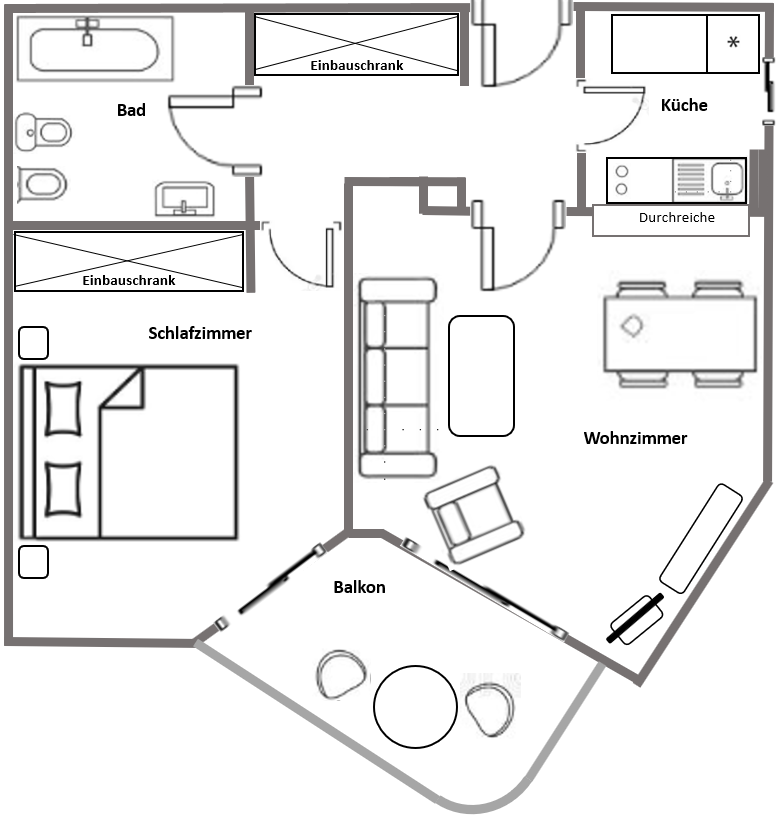
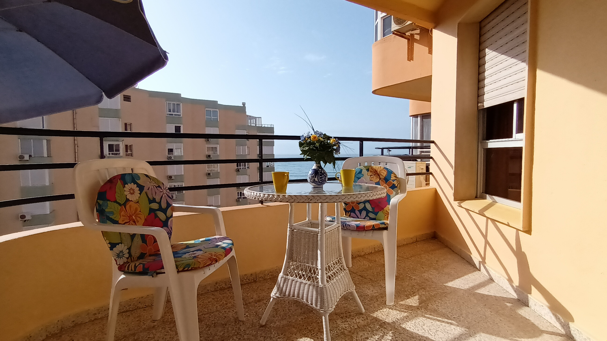
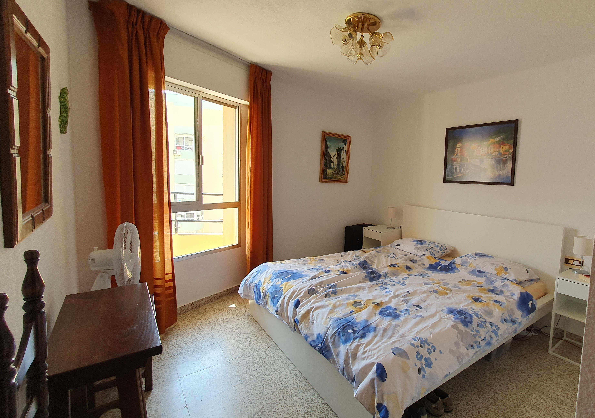
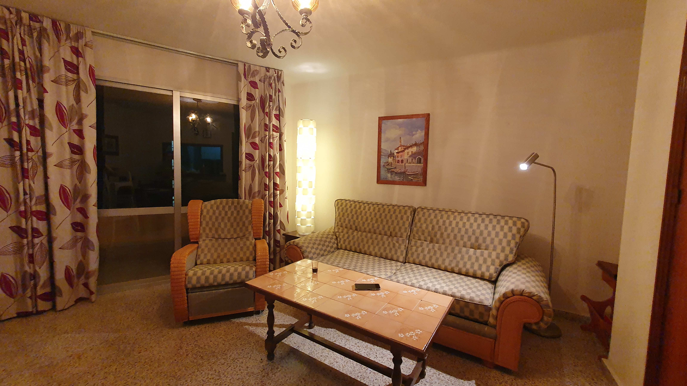
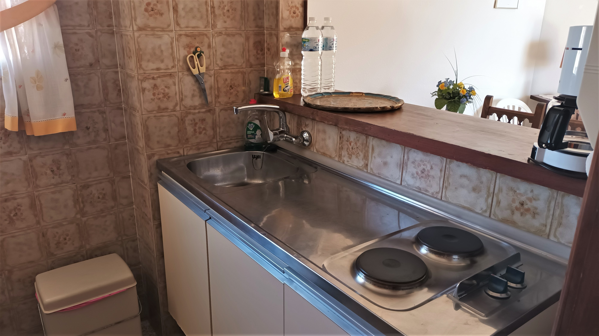
Urlaub in Torrox
- langer flacher Sandstrand- Strandliegen mit Duschen direkt vor dem Haus, Standup-Paddling, Schwimmen und Tauchen im Meer, Bootsverleih
- Schwimmen im hauseigenen Pool (mit separatem Kinderbecken)
- Tennisplatz kostenlos nutzbar
- Spaziergang auf der Promenade in beide Richtungen
- Wanderung nach Torrox-Pueblo (beschildert) an Obstplantagen wie Avocado- und Mangobäumen vorbei
- Schlemmen und Genießen auf der Promenade – Fisch vom Grill, Paella, Fleisch vom Spieß, Cocktails, Eis, Sangria, Wein
- Bäckereien und spanischer kleiner Supermarkt mit frischem Obst und Gemüse, Wurst- und Käsetheke sowie Lebensmitteln in ca. 20 m Entfernung vom Hauseingang
- Montags-Markt mit Kleidung, Souvenirs, Lederartikel, Obst
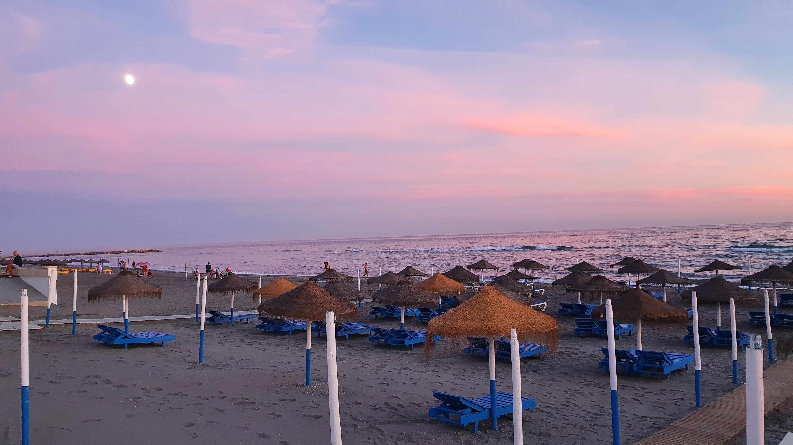
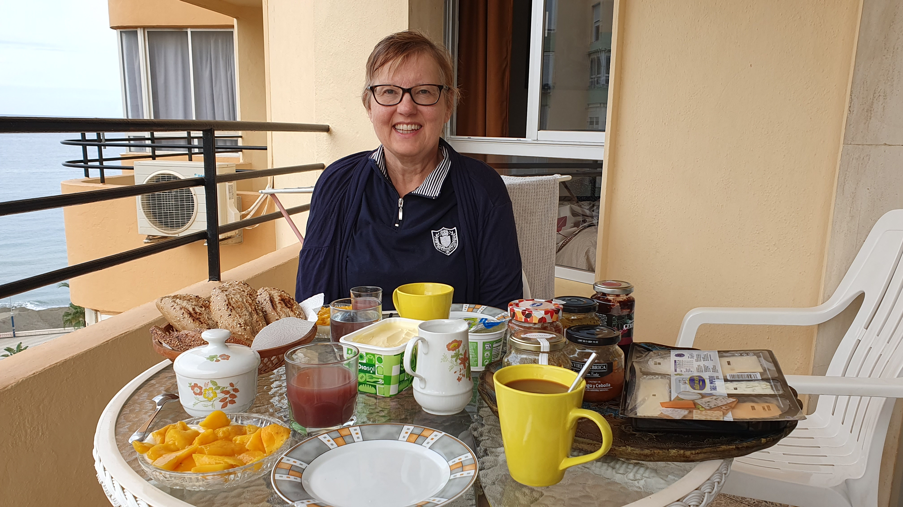
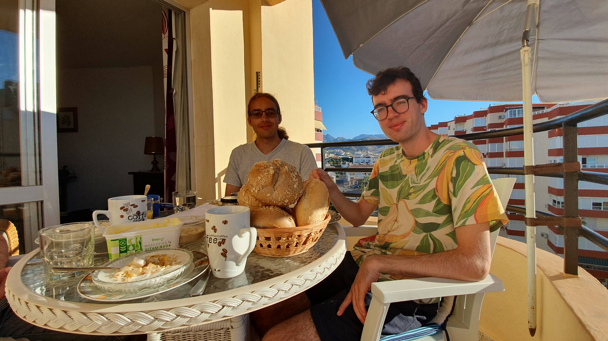
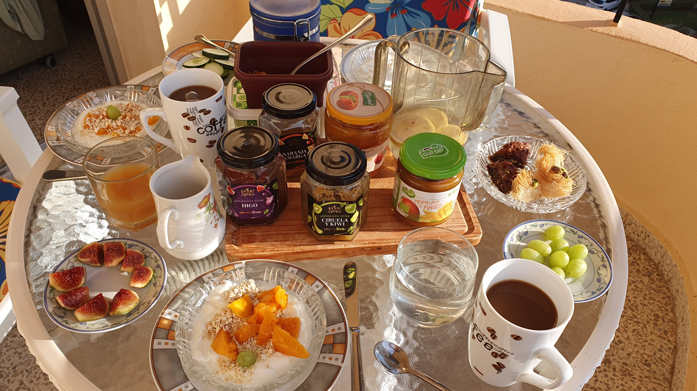
Lage
Torrox-Costa befindet sich an der Costa del Sol in der Provinz Andalusien, 65 km östlich vom Flughafen Malaga (mit Taxi/Mietwagen in 45 min erreichbar).
Die malerische Altstadt Torrox-Pueblo befindet sich in etwa 3 km Entfernung im Landesinnern.
Nerja, Cueva de Nerja, Malaga und Frigiliana
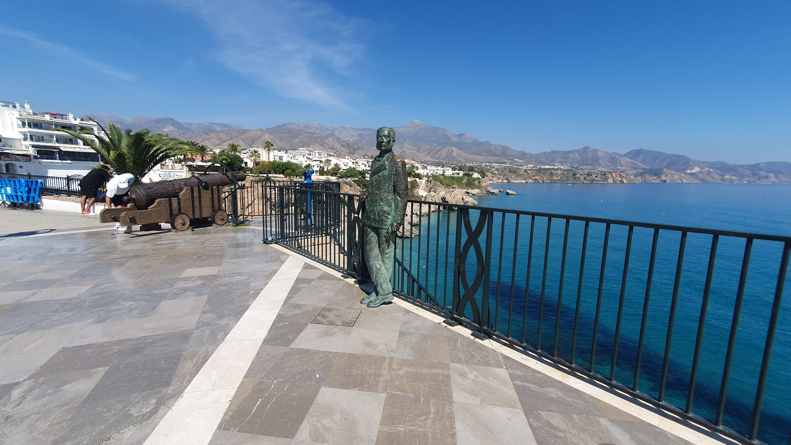
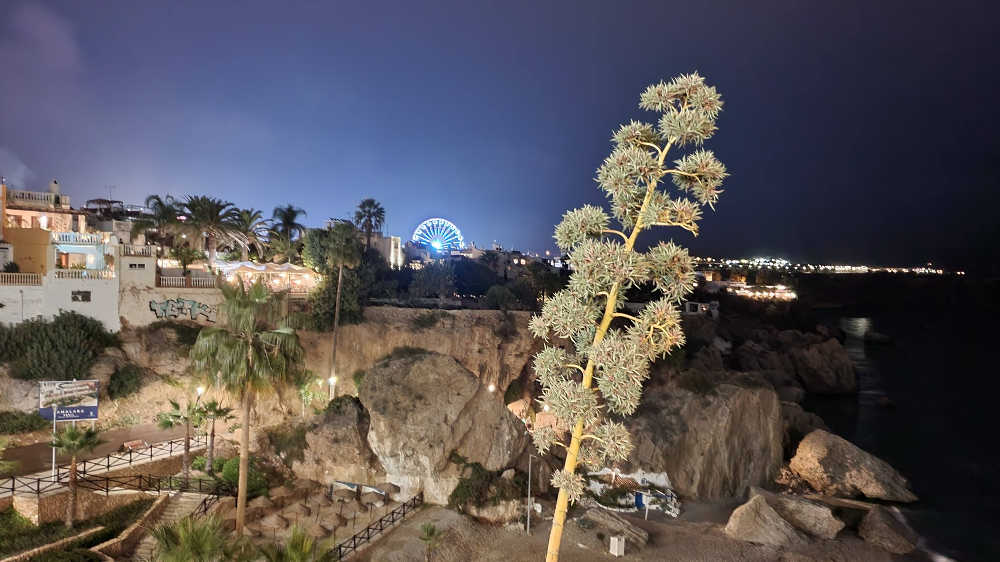
Zahlreiche Ausflugsziele sind von Torrox aus über das gut ausgebaute Straßennetz schnell zu erreichen. Eine Auswahl ist im Folgenden aufgelistet.
Angegeben ist jeweils die Entfernung von Torrox-Costa und die Fahrzeit mit dem Auto.
- Nerja - 9 km - 15 min
Malerischer Küstenort mit blumengeschmückten Gassen, großer Ausssichtsterrasse und vielen Restaurants und Cafes
- Cueva de Nerja - 15 km - 15 min
Große Tropfsteinhöhle mit bis zu 60 m hohen Sälen, deutschsprachiger Führung und kleinem botanischen Garten
- Frigiliana - 15 km - 20 min
Kleines Bergdorf mit zahlreichen Kachelbildern im maurischen Stil
- Competa - 20 km - 35 min
Idyllisches Bergdorf in 640 m Höhe mit vielen Galerien und Handwerksläden
- Malaga - 50 km - 45 min
Hauptstadt der Provinz Malaga mit knapp 600 Tsd. Einwohnern: Altstadt mit Kathedrale, Markthalle, Einkaufsstraßen, maurische Bergfestung, Picasso-Museum, zahlreiche weitere Museen, großer Hafen
Kontakt aufnehmen
Sandra Garus
Telefon / WhatsApp: +49 15755 515566
E-Mail: sandra.garus@gmail.com